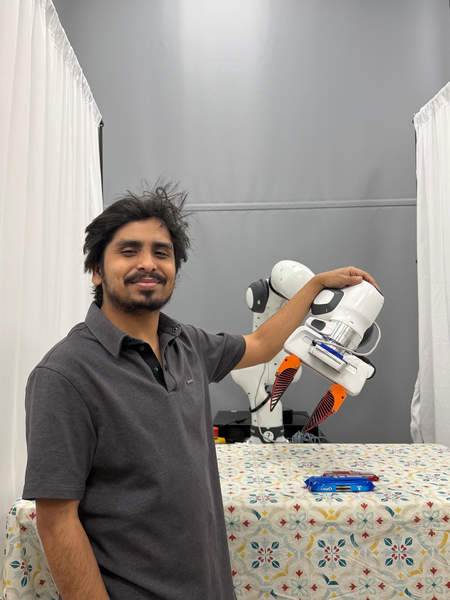

Ph.D. Student in Computer Science · University of New Hampshire
I am a Ph.D. student at the University of New Hampshire, advised by Dr. Momotaz Begum in the Cognitive Assistive Robotics Lab (CARL). I work on robot learning for manipulation. Policies learned from demonstrations can do well in the lab and then fail after a small change in the scene, and my research is about making them dependable. I build runtime failure detectors and safety filters for diffusion, flow-matching and vision-language-action policies, and I also build policies that hold up on long, multi-stage tasks. I test my work on real Franka Panda and FR3 arms, an Inspire dexterous hand and a Boston Dynamics Spot.
Before the Ph.D., I earned a B.Sc. in Robotics and Mechatronics Engineering from the University of Dhaka, worked as a machine learning engineer on a multi-camera video analytics product, and taught at BRAC University, where I am now on study leave.
I am looking for a research internship for Summer 2027.
Flow-matching and diffusion policies can fail after small run-time perturbations, even inside their training distribution. TAIL-Safe is a runtime safety watchdog for these policies. It learns a Lipschitz-continuous Q-value function that gives every state-action pair a long-term safety score, built from three task-agnostic criteria: visibility, recognizability and graspability. The zero-superlevel set of this function is an empirical control invariant set. When the policy proposes an action outside it, a recovery step inspired by Nagumo's theorem runs gradient ascent on the Q-function and steers the policy back to safety.
The Q-function is trained on failure data from a Gaussian Splatting digital twin of the lab, which takes about 20 minutes to build (5 minutes of capture, 15 of reconstruction). That let us collect failures without putting the real robot at risk.
On a real Franka, a flow-matching policy that succeeded in 20–25% of perturbed trials reached 100% with TAIL-Safe (two tasks, 50 trials each).
A flow-matching policy is trained with a pointwise velocity objective, but at run time it has to numerically integrate that velocity field. The mismatch lets small errors compound along the trajectory. We combine four fixes: auxiliary rectified-flow velocity regression, multi-step trajectory-consistency training that supervises the integrated displacement over trajectory segments, velocity-field regularization for temporal smoothness, and fourth-order Runge–Kutta (RK4) inference. None of them is enough alone. Our ablations show that RK4 fails without a smooth velocity field, and smoothness without trajectory-level supervision still drifts. A dual-view 3D point-cloud encoder provides the observations.
In 20 real trials per method on a Franka FR3 and a Boston Dynamics Spot, the policy reached 70% and 60% on two long-horizon, two-stage tasks (bell-pepper placing and cup stacking), where neither baseline (DP3, Consistency FM) completed a single trial. It also reached 100% on screwdriver placement, against 70% for DP3.
Watching a robot fail tells you little about what went wrong inside its policy. MIND (Mechanistic Interpretability for Neural Diagnosis) uses a sparse autoencoder to split a vision-language-action policy's internal activations into features. It names each feature by linking its activity to the robot's position, motion and surroundings, and keeps a name only if it still holds on episodes the method has not seen. During execution, MIND raises an alarm when these features drift from the patterns of successful runs, and it uses the named features behind the change to describe what went wrong.
Tested on three VLAs (OpenVLA, LingBot-VLA 2.0 and π0.5) in LIBERO and RoboTwin, and on a real Franka with an Inspire hand running a fine-tuned π0.5. Clamping a named feature steers the arm the way its name says for 12 of 14 motion concepts on OpenVLA. On π0.5 the monitor catches 99% of failures, against 95% for a monitor on the full activation, with half the false alarms.
A Koopman policy replaces a nonlinear visuomotor map with a linear operator on a latent state. A single operator struggles on long, multi-stage tasks. MoK keeps a bank of Koopman operators, and a learned gate mixes them at every step. Every mixture is contractive by construction, so over a full episode the prediction error shrinks (factor 0.65) instead of growing 8× to 20,000× as it does for earlier Koopman policies.
Best mean success across 7 Adroit and LIBERO tasks (85.5%, against 79.9% for Diffusion Policy). On a Franka FR3 with an Inspire hand, trained from 25 teleoperated demonstrations per task, it completed cup stacking and kitchen preparation in 70% of 20 trials each, against 25% and 5% for DP3.
What counts as safe depends on the task. Spilling water is a hazard indoors but may not be outdoors. Existing latent safety filters either hand-design their safety constraints or rely on generic, task-agnostic criteria such as those in TAIL-Safe. This work, IF-Safe (Interpreting Failure to be Safe), uses mechanistic interpretability to find the features inside a trained policy that matter for completing the task. It treats them as task-specific safety constraints and combines them with task-agnostic ones. From these constraints it computes a control barrier function, learns a value function that estimates it at run time, and uses that value function to correct the robot's action before the task fails.
Task success alone is not enough to deploy an imitation-learned policy where safety matters. This paper defines an execution guarantee: from inside a specific region of the state space, a visuomotor policy keeps its maximum task success despite minor run-time changes. We find that region with two perceptual constraints, field of view and recognizability, evaluated with novel view synthesis. A QP safety filter built on Nagumo's sub-tangentiality condition keeps the robot inside it.
On a real Franka, the recovery policy raised the success of Diffusion Policy and Crossway Diffusion Policy from 50–70% to 82–87%, in clean and cluttered scenes.
Runtime failure detection and safety for learned robot policies (TAIL-Safe, MIND, IF-Safe, execution guarantees), and policies for long-horizon manipulation (trajectory-consistent flow matching, MoK). I run my experiments on Franka Panda and FR3 arms, an Inspire dexterous hand and a Boston Dynamics Spot.
Co-founded a student robotics research group and supervised its projects, including a multi-robot extension of our Pathfinder navigation system.
Built Haate-khori, a teaching robot for a child–robot interaction study on Bengali handwriting, and IHABOT, an autonomous hospital robot with SLAM navigation and onboard vital-sign sensing.
Built and deployed a real-time video analytics product for a Japanese enterprise client, with multi-camera, multi-person tracking and pose-based action recognition. Automated model selection and hyperparameter tuning, which replaced manual retraining before each release.
Taught CSE 461 (Introduction to Robotics) and CSE 111 (Programming Language II). Supervised two senior theses, on autonomous agriculture and on space-telescope image analysis.
Mentored Bangladesh's national team for the International Robot Olympiad.
Imitation learning, Diffusion Policy, DP3, flow matching, Koopman models
OpenVLA, LingBot-VLA, π0.5
Runtime monitoring, failure detection, control barrier functions, QP safety filters, reach-avoid Q-value functions
Mechanistic interpretability, sparse autoencoders, activation steering
Franka Panda and FR3, Inspire dexterous hand, Boston Dynamics Spot, SpaceMouse teleoperation
MuJoCo, robosuite, LIBERO, RoboTwin, Adroit, MetaWorld
Point clouds, 3D Gaussian Splatting digital twins
Python, C++, PyTorch, CUDA, Docker, Git, Linux
I am looking for a research internship for Summer 2027 (F-1 student, eligible for CPT). If your team works on robot learning, policy failures or safety, I would be glad to talk. Email is the best way to reach me.